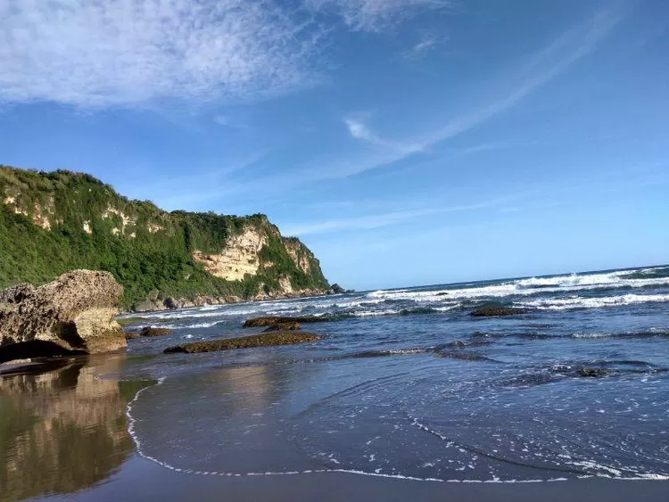

Sejarah dan Legenda Pantai Parangtritis
Pantai Parangtritis terletak di Kabupaten Bantul, Yogyakarta, sekitar 27 km dari pusat kota Yogyakarta. Pantai ini tidak hanya terkenal dengan keindahan pemandangannya, tetapi juga dengan legenda yang menyelimutinya. Menurut kepercayaan masyarakat setempat, Pantai Parangtritis merupakan salah satu gerbang menuju Kerajaan Laut Selatan yang dipimpin oleh Ratu Kidul. Banyak yang percaya bahwa pengunjung yang mengenakan pakaian hijau bisa mengundang kemarahan sang ratu.
Keindahan panorama Pantai Parangtritis saat senja.
Daya Tarik Wisata Pantai Parangtritis
Pantai Parangtritis menawarkan perpaduan unik antara pantai berpasir hitam, ombak besar, dan tebing-tebing karang yang menawan. Keindahan panorama matahari terbenam di pantai ini adalah salah satu yang terbaik di Yogyakarta. Selain itu, pengunjung juga dapat menikmati berbagai aktivitas menarik, seperti naik andong, ATV, atau bermain layang-layang.
Bermain di Hamparan Pasir dan Ombak
Pasir hitam khas Pantai Parangtritis memberikan pengalaman unik bagi pengunjung. Banyak wisatawan suka bermain di pinggir pantai sambil menikmati deburan ombak. Namun, karena ombaknya yang besar dan arus yang kuat, pengunjung diimbau untuk berhati-hati saat bermain di air.

Wisatawan menikmati permainan pasir di Pantai Parangtritis.
Paralayang dari Bukit Parang Endog
Bagi pecinta olahraga ekstrem, Pantai Parangtritis menawarkan pengalaman paralayang dari Bukit Parang Endog. Dari ketinggian, pengunjung dapat menikmati pemandangan laut lepas yang menakjubkan sambil merasakan sensasi melayang di udara.

Paralayang dari Bukit Parang Endog dengan latar Pantai Parangtritis.
Lokasi dan Akses Menuju Pantai Parangtritis
Pantai Parangtritis berjarak sekitar 27 km dari pusat Kota Yogyakarta. Untuk mencapai pantai ini, Anda bisa menggunakan kendaraan pribadi, taksi, atau bus umum. Perjalanan menuju Pantai Parangtritis melewati pemandangan persawahan dan perbukitan yang indah.
Fasilitas di Pantai Parangtritis
Pantai Parangtritis memiliki berbagai fasilitas pendukung yang memudahkan pengunjung, seperti:
- Warung makan dan restoran yang menyediakan kuliner khas laut.
- Penyewaan ATV dan kuda untuk berkeliling pantai.
- Hotel dan penginapan dengan berbagai pilihan harga.
- Area parkir yang luas untuk kendaraan pengunjung.
Tips Berkunjung ke Pantai Parangtritis
Beberapa tips untuk menikmati liburan di Pantai Parangtritis:
- Datanglah pada sore hari untuk menikmati keindahan matahari terbenam.
- Gunakan pakaian yang nyaman dan alas kaki yang sesuai untuk berjalan di pasir.
- Jangan berenang terlalu jauh ke tengah laut karena ombaknya cukup besar dan berbahaya.
- Bawalah kamera untuk mengabadikan momen indah di pantai ini.
- Hormati adat dan kepercayaan lokal, seperti larangan mengenakan pakaian hijau.